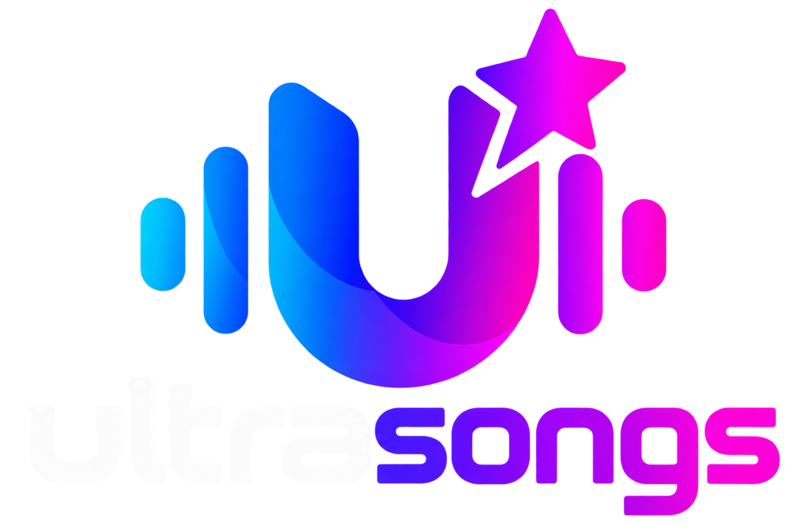
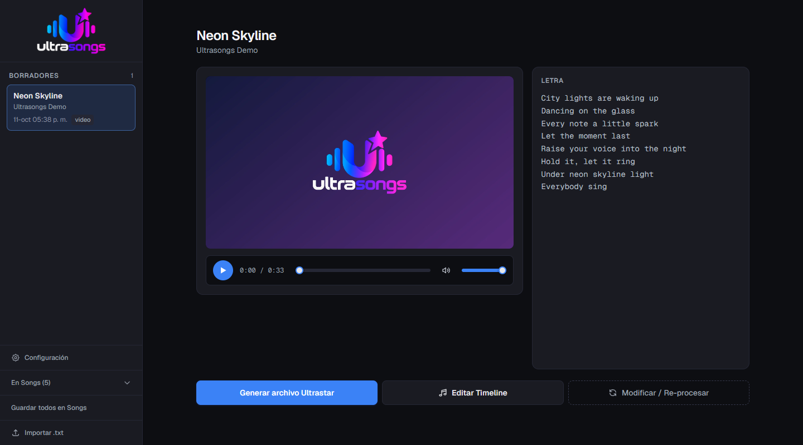
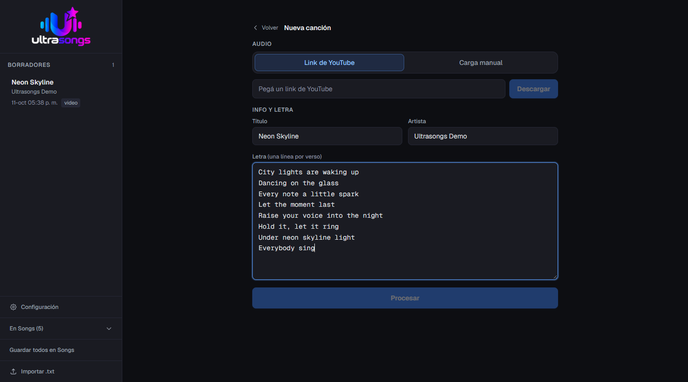
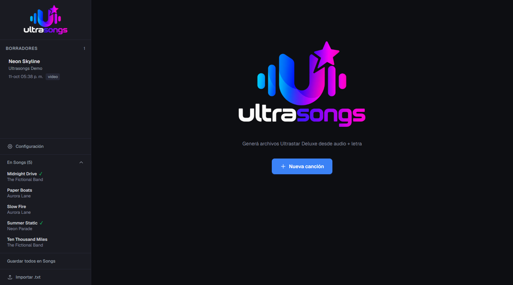

01
Importá tu música
Partí de un archivo de audio o video, o de un enlace de YouTube. Sumá la letra y dale play a tu próxima canción.

CREÁ. SINCRONIZÁ. CANTÁ.
Esa canción que querés cantar.
Ahora también la podés crear.
Convertí audio y letras en canciones listas para jugar. Con ayuda de IA, edición visual y control total sobre el resultado.
Descargar para WindowsLa primera ejecución descarga los modelos de IA (varios GB).
Partí de un archivo de audio o video, o de un enlace de YouTube. Sumá la letra y dale play a tu próxima canción.
Separa la voz, transcribe la letra y detecta las notas para ayudarte a sincronizar voz y música.
Editá las notas en un timeline visual, corregí la letra y generá el archivo de Ultrastar.

IA + TU OÍDO
Ajustá frases, nota por nota, con un editor visual simple y preciso. Escuchá, corregí y dejá cada canción como te gusta.
Explorá el editorCÓMO FUNCIONA
Tres pasos. Una canción lista para cantar.
Cargá un archivo de audio o video, o pegá un enlace de YouTube. Agregá la letra.
Ultrasongs separa la voz, detecta las notas y alinea la letra. Todo en tu computadora.
Revisá el resultado en el editor y exportá tu canción para Ultrastar.
POR DENTRO
De la primera idea a tu biblioteca de canciones.


TU PRÓXIMA CANCIÓN EMPIEZA ACÁ
Para cantar, compartir y disfrutar.
El botón abre las versiones disponibles en GitHub.
Tu música se procesa en tu computadora.